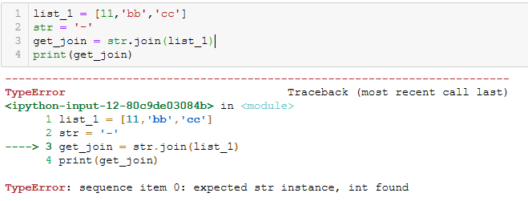

这两个内置函数是用来对十进制（十六进制也可以）与ASCii之间进行转换
t_1 = chr(99)
t_2 = chr(66)
print(t_1)
print(t_2)
#c
#Bt_3 = ord('c')
t_4 = ord('B')
print(t_3)
print(t_4)
#66
#99import random
def get_random_code(length = 4):
data =[]
for i in range(length):
temp_code = random.randint(65,90)
data.append(chr(temp_code))
return ''.join(data)
get_random_code()
#'NWVI'str.join(sequence) 序列sequence用str进行连接
list_1 = ['aa','bb','cc']
str = '-'
get_join = str.join(list_1)
print(get_join)
#aa-bb-cc需要连接的列表中不能有int 否则会出现错误
